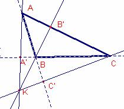

Problema
292
Demostreu
que la condició necessària i suficient q fi que l’altura , la mitjana i una de les
bisectrius de l’angle C d’un
triangle  siguen concurrents és
que:
siguen concurrents és
que:
.
Thébault, V. (1949): Mathematics Magazine. Vol. 23, No. 2, Nov. - Dec., 1949, p. 103
 Solució:
Solució:
a)
Suposem que B és un angle agut.
Aplicant
el teorema de Ceva, , , (bisectriu interior)
són 3 cevianes. Les cevianes s’intersecten si i només si  .
.
Aplicant
la propietat de la bisectriu: 
Per
ser B’ punt mig del costat  , .
, .
Aplicant
raons trigonomètriques al triangle rectangle  :
:
, , (bisectriu interior)
s’intersecten si i només si
.
Aplicant
el teorema dels sinus i tenint en compte que  .
.
, , (bisectriu interior)
s’intersecten si i només si ,
si
i només si, .
b)
Suposem que B és obtús
Siga
(bisectriu exterior)
C’ en la prolongació del costat 
, , s’intersecten si i
només si  . (veure nota final)
. (veure nota final)
Aplicant
la propietat de la bisectriu: 
Per
ser B’ punt mig del costat  , .
, .
Aplicant
raons trigonomètriques al triangle rectangle  :
:
.
, , (bisectriu exterior)
s’intersecten si i només si
.
Aplicant
el teorema dels sinus i tenint en compte que  .
.
, , (bisectriu exterior)
s’intersecten si i només si ,

si i només si, . Nota:
(exterior al triangle)
A’ en la recta BC,
(interior al triangle)
B’ en  ,
,
(exterior al triangle)
C’ en la recta AB
, , s’intersecten si i
només si  .
.
Demostració:

Suposem
que les rectes AA’, BB’, CC’ es tallen
en un punt K.
Dos
triangle que tenen la mateixa altura les àrees són proporcionals a les bases.


Multiplicant
les tres igualtats:


Siguen
els punts A’ de la recta BC, C’ de la recta AB  tal que:
tal que:
 (1)
(1)
Siga
K el punt intersecció de .
Siga
la recta r que passa pels punt B, K que talla el costat  en D
en D
Vegem
que D es igual a B’
 i es tallen en K
aleshores,
i es tallen en K
aleshores,  (2)
(2)
Igualant
les dues (1), (2) expressions, 
Els
punts D, B’ pertanyen al costat  i divideixen el costat
i divideixen el costat
 amb la mateixa raó,
per tant D i B’ coincideixen.
amb la mateixa raó,
per tant D i B’ coincideixen.
Per
tant, , , s’intersecten.